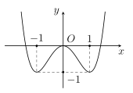
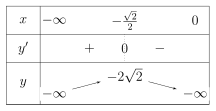
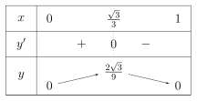
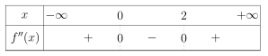
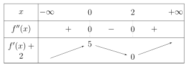
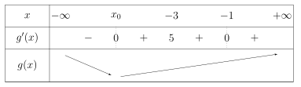
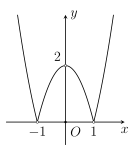
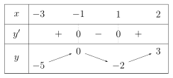
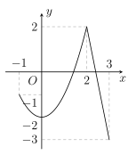

Phần I. Thí sinh trả lời từ câu 1 đến câu 12, mỗi câu hỏi chọn một phương án.
Câu 1
Tìm giá trị nhỏ nhất của hàm số y=x−1x+3 trên đoạn [−1;0].
A.[−1;0]miny=–3.
B.[−1;0]miny=–2.
C.[−1;0]miny=–4.
D.[−1;0]miny=3.
Hiện/ẩn lời giải — Câu 1
Có tập xác định của hàm số là R∖{1} và y′=(x−1)2−4<0,∀x=1. Do đó hàm số nghịch biến trên [−1;0] và [−1;0]miny=y(0)=–3.
Câu 2
Cho hàm số y=f(x) có đồ thị như hình vẽ sau. Giá trị nhỏ nhất trên tập xác định D của hàm số là
A.Dminy=–1.
B.Dminy=1.
C.Dminy=0.
D.Dminy=–2.

Hiện/ẩn lời giải — Câu 2
Dễ thấy điểm thấp nhất của đồ thị hàm số có tung độ bằng –1, hay giá trị nhỏ nhất của hàm số trên tập xác định là –1.
Câu 3
Tìm giá trị lớn nhất trên đoạn [1;3] của hàm số
f(x)=x3−2x2−4x+1.
A.[1;3]maxf(x)=–7.
B.[1;3]maxf(x)=–4.
C.[1;3]maxf(x)=–2.
D.[1;3]maxf(x)=−2767.
Hiện/ẩn lời giải — Câu 3
Đạo hàm:
f′(x)=3x2−4x−4
Cho f′(x)=0, ta có phương trình:
3x2−4x−4=0
Giải phương trình này, ta tìm được hai nghiệm:
x=2 (thỏa mãn thuộc đoạn [1;3])
x=−32 (loại vì không thuộc đoạn [1;3])
Tính giá trị của f(x) tại các điểm mút của đoạn và tại x=2 ta có:
f(1)=–4,f(2)=–7,f(3)=–2
So sánh các giá trị vừa tính, ta thấy giá trị lớn nhất là –2, đạt được khi x=3.
Câu 4
Giá trị lớn nhất của hàm số y=x−2x+1 trên [−1;0] là
A.−21.
B.−32.
C. 2.
D. 0.
Hiện/ẩn lời giải — Câu 4
Tập xác định: Hàm số y=x−2x+1 xác định và liên tục trên đoạn [−1;0] (do mẫu số x−2=0 với mọi x∈[−1;0]).
Đạo hàm:
y′=(x−2)21⋅(–2)−1⋅1=(x−2)2−3
Chiều biến thiên: Vì y′<0 với mọi x∈[−1;0], nên hàm số luôn nghịch biến (giảm dần) trên đoạn này.
Kết luận: Do hàm số nghịch biến trên [−1;0], giá trị lớn nhất sẽ đạt được tại điểm đầu x=–1:
[−1;0]maxy=y(–1)=−1−2−1+1=0
Câu 5
Cho hàm số f(x)=–2x4+4x2+10. Tìm giá trị lớn nhất M và giá trị nhỏ nhất m của hàm số trên đoạn [0;2].
A.M=10;m=–6.
B.M=12;m=–6.
C.M=10;m=–8.
D.M=12;m=–8.
Hiện/ẩn lời giải — Câu 5
Giá trị lớn nhất là M=12 và giá trị nhỏ nhất là m=–6. Dưới đây là các bước giải chi tiết:
Hàm số f(x)=–2x4+4x2+10 là hàm đa thức nên xác định và liên tục trên đoạn [0;2].
Đạo hàm: f′(x)=–8x3+8x.
Tìm các điểm tới hạn: Cho f′(x)=0, ta có: –8x3+8x=0
⟺x=0∈[0;2]x=1∈[0;2]x=–1∈/[0;2] (loại)
Tính giá trị của f(x) tại các điểm mút của đoạn và tại điểm tới hạn x=1 ta được:
f(0)=10,f(1)=12,f(2)=–6
Kết luận: So sánh các giá trị 10, 12, –6 ta được giá trị lớn nhất M=[0;2]maxf(x)=12 (đạt tại x=1), giá trị nhỏ nhất: m=[0;2]minf(x)=–6 (đạt tại x=2).
Câu 6
Giá trị lớn nhất của hàm số y=x+2−x là
A.−45.
B.3−1.
C.49.
D. 2.
Hiện/ẩn lời giải — Câu 6
Giá trị lớn nhất của hàm số là 49 (hoặc 2,25). Dưới đây là các bước giải chi tiết:
Tập xác định: Điều kiện xác định: x+2⩾0⇔x⩾−2 nên tập xác định của hàm số là D=[−2;+∞).
Căn cứ vào bảng biến thiên ta có giá trị lớn nhất của hàm số trên (−∞;+∞) là
M=y(1)=2
Cách 2: Sử dụng bất đẳng thức Bunhiacopxki (giải nhanh). Áp dụng bất đẳng thức Bunhiacopxki cho hai cặp số (1;1) và (x;1):
(1⋅x+1⋅1)2⩽(12+12)(x2+12)⟺(x+1)2⩽2(x2+1)
Chia cả hai vế cho x2+1>0 rồi lấy căn bậc hai hai vế:
x2+1(x+1)2⩽2⟹x2+1x+1⩽2
Dấu "=" xảy ra khi 1x=11⟺x=1.Vậy M=maxy=2 tại x=1.
Câu 9
Giá trị lớn nhất của hàm số y=2x+x1 khi x<0 là
A.22.
B.–22.
C. Không tồn tại.
D. 4.
Hiện/ẩn lời giải — Câu 9
Giá trị lớn nhất của hàm số y=2x+x1 khi x<0 là –22. Dưới đây là hai cách giải chi tiết:
Cách 1: Sử dụng bất đẳng thức Cô-si (AM-GM)
Vì x<0, đặt t=−x⟹t>0. Khi đó, hàm số trở thành:
y=–2t−t1=−(2t+t1)
Áp dụng bất đẳng thức Cô-si cho hai số dương 2t và t1:
2t+t1⩾22t⋅t1=22
Nhân cả hai vế với –1<0, bất đẳng thức đổi chiều:
y=−(2t+t1)⩽−22
Dấu "=" xảy ra khi: 2t=t1⇔t=22(do t>0). Suy ra x=−t=−22.
Cách 2: Sử dụng đạo hàm và xét sự biến thiên
Tập xác định: D=(−∞;0). Đạo hàm:
y′=2−x21=x22x2−1
Tìm điểm tới hạn trên (−∞;0):
⟺⟺⟺y′=02x2−1=0x2=21x=−22(do x<0)
Bảng biến thiên:

Căn cứ bảng biến thiên ta có hàm số đạt giá trị lớn nhất tại x=−22 và
(−∞;0)maxy=y(−22)=–22.
Câu 10
Giá trị lớn nhất của hàm số f(x)=x(1−x2) trên khoảng (0;1) là
A.91.
B.31.
C. 0.
D.923.
Hiện/ẩn lời giải — Câu 10
Giá trị lớn nhất của hàm số f(x)=x(1−x2) trên khoảng (0;1) là 923. Dưới đây là hai cách giải chi tiết:
Hàm số xác định trên khoảng (0;1).
Khai triển và tính đạo hàm:
⟹f(x)=x−x3f′(x)=1−3x2
Tìm điểm tới hạn trên khoảng (0;1):
f′(x)=0⟺1−3x2=0⇔x=33(do x∈(0;1))
Bảng biến thiên:

Kết luận. Căn cứ bảng biến thiên, ta có giá trị lớn nhất:
(0;1)maxf(x)=f(33)=923.
Câu 11
Cho hàm số y=f(x) có đạo hàm cấp hai trên R. Biết f′(0)=3,f′(2)=–2 và bảng xét dấu của f′′(x) như sau:

Hàm số y=f(x+3)+2x đạt giá trị nhỏ nhất tại điểm x0 thuộc khoảng nào sau đây?
A.(3;+∞).
B.(−∞;–3).
C.(0;3).
D.(–2;0).
Hiện/ẩn lời giải — Câu 11
Hàm số y=f(x+3)+2x đạt giá trị nhỏ nhất tại điểm x0 thuộc khoảng (−∞;–3). Dưới đây là các bước giải chi tiết:
Dựa vào bảng xét dấu đã cho và f′(0)=3,f′(2)=–2, ta có bảng biến thiên như sau:

Đặt g(x)=f(x+3)+2x thì đạo hàm:
g′(x)=f′(x+3)+2
Ta có bảng biến thiên của hàm số g(x) như sau:

Dựa vào bảng biến thiên ta thấy hàm số g(x) đạt giá trị nhỏ nhất tại x0<−3.
Câu 12
Xét hàm số f(x)=∣x2+ax+b∣, với a,b là tham số. Gọi M là giá trị lớn nhất của hàm số trên [−1;3]. Khi mà M nhận giá trị nhỏ nhất có thể được, hãy tính a+2b.
A. 3.
B. 4.
C. –4.
D. 2.
Hiện/ẩn lời giải — Câu 12
Giá trị của a+2b là –4. Dưới đây là các bước giải chi tiết:
Vì M là giá trị lớn nhất nên hiển nhiên
M⩾∣f(–1)∣=∣b−a+1∣,M⩾∣f(3)∣=∣b+3a+9∣.
Chúng ta sẽ sử dụng bất đẳng thức ∣A∣+∣B∣⩾∣A+B∣ nhưng f(–1)+f(3) chưa triệt tiêu hết a,b để được một hằng số. Vậy ta cần tìm một điểm nữa.
Chúng ta sử dụng một tính chất của hàm bậc hai, nếu P(x)=x2+ax+b và lấy hai điểm đối xứng quanh m là $
m-hvaˋ m+h, thıˋ P(m-h)+P(m+h)-2P(m)=2h^2. $
Các số hạng chứa a,b đều triệt tiêu.
Áp dụng vào bài này, ta lấy điểm x=2−1+3=1, có
M⩾∣f(1)∣=∣b+a+1∣⇒2M⩾∣−2b−2a−2∣.
Bây giờ, sử dụng bất đẳng thức ∣A∣+∣B∣+∣C∣⩾∣A+B+C∣ ta được
Suy ra, M⩾2 hay giá trị nhỏ nhất của M là 2. Dấu bằng xảy ra khi
⎩⎨⎧∣b−a+1∣=2∣b+3a+9∣=2∣b+a+1∣=2
và b−a+1,b+3a+9,–2b−2a−2 cùng dấu. Từ đó tìm được a=–2 và b=–1. Lúc đó, ta có hàm số g(x)=x2−2x−1 có đỉnh là x=1∈[−1;3]. Giá trị lớn nhất của f(x)=∥g(x)∥ trên đoạn này đúng bằng 2.
Phần II. Thí sinh trả lời từ câu 1 đến câu 4, trong ý a), b), c), d) ở mỗi câu câu, thí sinh chọn ĐÚNG hoặc SAI.
Câu 1
Cho hàm số y=f(x) xác định trên tập D. Số M và m lần lượt được gọi là giá trị lớn nhất và giá trị nhỏ nhất của hàm số y=f(x) trên D.
A.f(x)⩾M với mọi x∈D thì M là GTLN của hàm số.
B.m là GTNN nếu f(x)⩾m với mọi x∈D và tồn tại x0∈D sao cho f(x0)=m.
C.M−m=0.
D.M là GTLN nếu f(x)⩽M với mọi x∈D và tồn tại x0∈D sao cho f(x0)=M.
Hiện/ẩn lời giải — Câu 1
Dưới đây là phân tích chi tiết cho từng phát biểu:
a) SAI. Lý do: Định nghĩa giá trị lớn nhất (GTLN) đòi hỏi f(x)⩽M với mọi x∈D (chứ không phải f(x)⩾M). Ngoài ra, phải có điều kiện bắt buộc là tồn tại x0∈D sao cho f(x0)=M.
b) ĐÚNG. Lý do: Đây là định nghĩa chuẩn của giá trị nhỏ nhất (GTNN): m là GTNN của f(x) trên D khi và chỉ khi f(x)⩾m với mọi x∈D và tồn tại x0∈D sao cho f(x0)=m.
c) SAI. Lý do: Đẳng thức M−m=0⟺M=m chỉ xảy ra khi f(x) là hàm hằng trên tập D. Trong trường hợp tổng quát, giá trị lớn nhất luôn lớn hơn hoặc bằng giá trị nhỏ nhất (M⩾m⟹M−m⩾0).
d) ĐÚNG. Lý do: Đây là định nghĩa chuẩn của giá trị lớn nhất (GTLN): M là GTLN của f(x) trên D khi và chỉ khi f(x)⩽M với mọi x∈D và tồn tại x0∈D sao cho f(x0)=M
Câu 2
Cho hàm số y=f(x) liên tục trên R và có đồ thị như hình dưới đây.
A. Hàm số nghịch biến trên khoảng (0;1).
B. Hàm số đồng biến trên khoảng (–1;2).
C. Hàm số có ba điểm cực trị.
D. Hàm số có giá trị lớn nhất bằng 2.

Câu 3
Cho hàm số y=f(x) xác định và liên tục trên khoảng (–3;2) có x→(–3)+limf(x)=–5,x→2−limf(x)=3 và có bảng biến thiên như sau:
A. Hàm số không có GTNN trên khoảng (–3;2).
B. Giá trị cực đại của hàm số bằng 0.
C. GTLN của hàm số trên khoảng (–3;2) bằng 0.
D. Giá trị cực tiểu của hàm số bằng –2.

Câu 4
Một công ty sản xuất một loại sản phẩm. Nếu có x sản phẩm được bán ra thì hàm giá bán trên mỗi sản phẩm là q(x)=10000−250x (nghìn đồng), với 0<x<40. Gọi f(x) là hàm doanh thu của công ty (đơn vị: nghìn đồng). Xem y=f(x) là một hàm số xác định trên khoảng (0;40).
A.f(x)=x⋅q(x).
B.f′(x)=–500x+10000.
C. Phương trình f′(x)=0 có nghiệm là x=2.
D. Doanh thu lớn nhất của công ty bằng 100 triệu đồng.
Hiện/ẩn lời giải — Câu 4
Dưới đây là lời giải chi tiết và đánh giá tính đúng/sai cho từng phát biểu:
a) ĐÚNG. Giải thích: Doanh thu f(x) được tính bằng số lượng sản phẩm bán ra nhân với giá bán trên mỗi sản phẩm:
f(x)=x⋅q(x)=x(10000−250x) (nghìn đồng)
b) ĐÚNG. Giải thích: Từ f(x)=–250x2+10000x, tính đạo hàm ta được:
f′(x)=(–250x2+10000x)′=–500x+10000
c) SAI. Giải thích: Giải phương trình f′(x)=0:
⟺⟺–500x+10000=0500x=10000x=20
Nghiệm của phương trình là x=20 (thỏa mãn 0<x<40), không phải x=2.
d) ĐÚNG. Giải thích: Vì f′′(x)=–500<0 nên hàm số f(x) đạt giá trị lớn nhất tại điểm tới hạn x=20.Giá trị doanh thu lớn nhất là:
Đổi đơn vị: 100 000 nghìn đồng = 100 000 000 đồng = 100 triệu đồng.
Phần III. Thí sinh trả lời từ câu 1 đến câu 6 (không làm tròn các phép tính trung gian trong các câu từ 1 đến câu 6).
Câu 1
Cho hàm số y=f(x) liên tục trên đoạn [−1;3] và có đồ thị như hình vẽ bên dưới. Gọi M,m lần lượt là giá trị lớn nhất và giá trị nhỏ nhất của hàm số đã cho trên đoạn [−1;3]. Tính M−m.

Câu 2
Biết hàm số y=x3−3x2−9x+28 đạt giá trị nhỏ nhất trên đoạn [0;4] tại x0. Tính P=x0+2.
Câu 3
Tìm m để hàm số y=mx+1x−m có giá trị nhỏ nhất trên [0;1] bằng –2.
Hiện/ẩn lời giải — Câu 3
Giá trị của m thỏa mãn yêu cầu bài toán là m=2. Dưới đây là các bước giải chi tiết:
Điều kiện xác định: Để hàm số xác định và liên tục trên đoạn [0;1], mẫu số phải khác 0 với mọi x∈[0;1]:
mx+1=0∀x∈[0;1]
Đạo hàm:
y′=(mx+1)21⋅1−(−m)⋅m=(mx+1)2m2+1
Vì m2+1>0 với mọi m∈R nên y′>0 trên tập xác định.
Tìm m: Do y′>0 với mọi x∈[0;1], hàm số luôn đồng biến (tăng dần) trên đoạn [0;1].
Do đó, giá trị nhỏ nhất của hàm số trên đoạn [0;1] đạt được tại x=0:
[0;1]miny=y(0)=m⋅0+10−m=−m
Theo bài ra, giá trị nhỏ nhất bằng –2:
−m=–2⟺m=2
Thử lại: Với m=2, hàm số trở thành y=2x+1x−2. Mẫu số 2x+1=0⟺x=−21 (thỏa mãn xác định và liên tục trên [0;1]).[0;1]miny=y(0)=–2 (thỏa mãn). Vậy m=2.
Câu 4
Một xưởng in có 8 máy in, mỗi máy in được 3600 bản in trong một giờ. Chi phí để vận hành một máy in trong mỗi lần in là 50 nghìn đồng. Chi phí cho n máy in chạy trong một giờ là 10(6n+10) nghìn đồng. Hỏi nếu in 50000 tờ quảng cáo thì phải sử dụng bao nhiêu máy in để được lãi nhiều nhất?
Hiện/ẩn lời giải — Câu 4
Chi phí vận hành (cố định) cho n máy in: Chi phí cho mỗi máy là 50 nghìn đồng, nên chi phí cho n máy là:
C1=50n (nghìn đồng)
Thời gian hoàn thành và chi phí chạy n máy: Một máy in được 3600 bản/giờ nên n máy in được 3600n bản/giờ. Thời gian cần thiết để in xong 50000 tờ quảng cáo là:
t=3600n50000=9n125 (giờ)
Chi phí chạy n máy trong thời gian t giờ (với chi phí 10(6n+10) nghìn đồng/giờ):
Tìm giá trị nhỏ nhất của C(n) trên đoạn [1;8]: Xét hàm số f(x)=50x+32500+9x12500 trên đoạn [1;8]. Tính đạo hàm:
f′(x)=50−9x212500
Cho f′(x)=0:
⟹50=9x212500x=9250=3510≈5,27
Nhận xét: Trên khoảng (1;5,27),f′(x)<0 nên hàm số nghịch biến (giảm). Trên khoảng (5,27;8),f′(x)>0 nên hàm số đồng biến (tăng). Do n phải là số nguyên nguyên dương trong đoạn [1;8], ta so sánh chi phí tại hai điểm nguyên gần 5,27 nhất là n=5 và n=6:
So sánh C(5)<C(6), vậy chi phí đạt giá trị nhỏ nhất khi n=5.
Kết luận:Để thu được lãi nhiều nhất, xưởng in phải sử dụng 5 máy in.
Câu 5
Ông An muốn xây một cái bể chứa nước lớn dạng một khối hộp chữ nhật không nắp có thể tích bằng 288 m³. Đáy bể là hình chữ nhật có chiều dài gấp đôi chiều rộng, giá thuê nhân công để xây bể là 500000 đồng/ m². Nếu ông An biết xác định các kích thước của bể hợp lý thì chi phí thuê nhân công sẽ thấp nhất. Hỏi ông An trả chi phí thấp nhất để xây dựng bể đó là bao nhiêu? (Đơn vị: triệu đồng)
Hiện/ẩn lời giải — Câu 5
Chi phí thấp nhất để ông An thuê nhân công xây bể là 108 triệu đồng. Dưới đây là các bước giải chi tiết:
Gọi kích thước của bể: Chiều rộng đáy bể: x (m) với x>0. Chiều dài đáy bể: 2x (m). Chiều cao bể: h (m) với h>0.
Biểu diễn chiều cao h theo x: Thể tích bể là V=288 m3:
⟹V=2x⋅x⋅h=2x2h=288h=x2144
Lập biểu thức diện tích cần xây (bể không nắp):Diện tích các mặt cần xây gồm 1 mặt đáy và 4 mặt xung quanh:
S=(2x⋅x)+2(2x⋅h)+2(x⋅h)=2x2+6xh
Thay h=x2144 vào biểu thức diện tích S:
S(x)=2x2+6x⋅x2144=2x2+x864
Tìm giá trị nhỏ nhất của S(x) với x>0:
Cách 1: Dùng đạo hàm
S′(x)=4x−x2864
Cho S′(x)=0:
⟺⟺⟺4x−x2864=04x3=864x3=216x=6 (m)
Vì S′(x)<0 khi x∈(0;6) và S′(x)>0 khi x∈(6;+∞), nên diện tích S(x) đạt giá trị nhỏ nhất tại x=6:
Cho hàm số y=f(x)=x−1x2+x+2. Gọi M là giao điểm của đồ thị hàm số y=f(x) với trục tung. Phương trình tiếp tuyến của đồ thị hàm số y=f(x) tại điểm M là y=ax+b với a,b là các số nguyên. Tính giá trị của a+b.